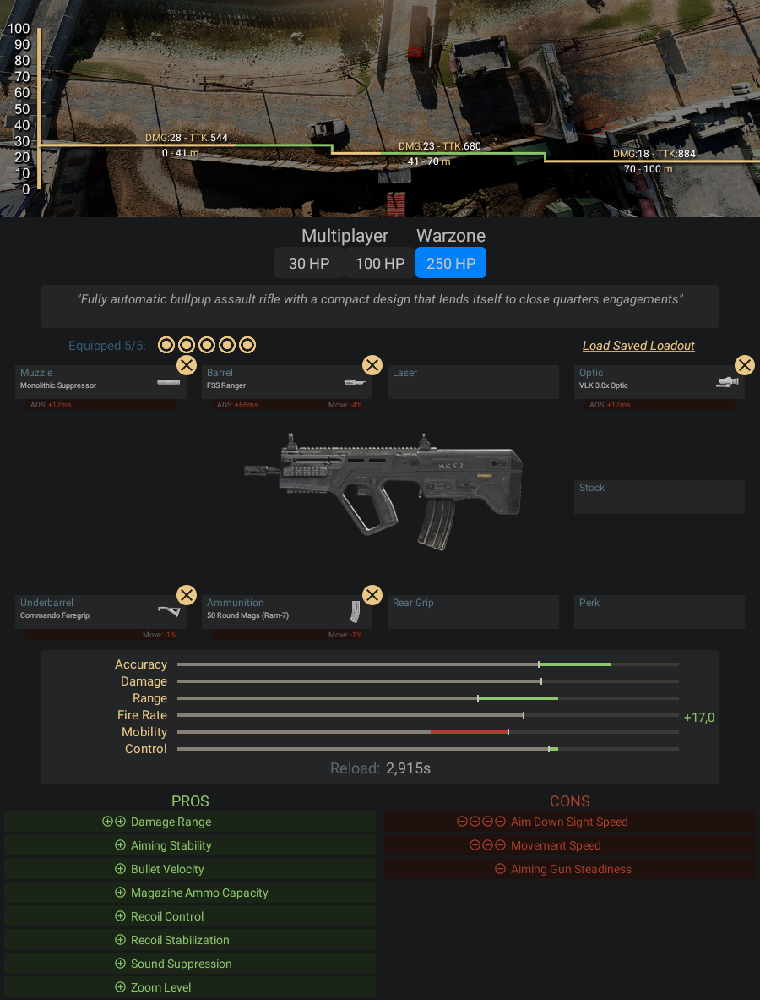

Fuzil de assalto bullpup totalmente automático com um design compacto projetado para
confrontos a curta distância.
- Pontos Positivos:
- -Tem um bom dano e uma boa cadência para a média, curta distância e até a
- longa distâncias, em questão de números é o 2º melhor dessa classe
- -É fuzil de assalto que mira mais ligeiro
- Pontos Negativos:
- -Seu recuo é um pouco atípico dentre outras armas do jogo, o recuo vai muito para
- a esquerda (figura abaixo demonstra melhor o que eu tô dizendo)
Informações e dicas de como fazer uma classe da RAM-7:
Acessórios para RAM-7:
- Boca - Surpressor Monolítico
- Cano - FSS Ranger
- Lente - VLK 3.0x
- Acoplamento - Empunhadora de Comando
- Munição - Carregador de 50 projéteis